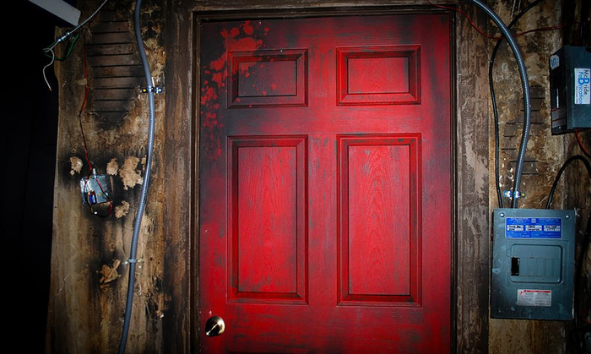

A sikeres munkahelyi közösségek alapja az együttműködés, a bizalom és a hatékony kommunikáció. A csapatépítő programok célja, hogy a munkatársak kilépjenek a mindennapi munka környezetéből, és egy kötetlenebb, élményekkel teli helyzetben ismerjék meg egymást. Szabadulószobánk erre kínál egy izgalmas és modern megoldást Dunaújvárosban.
A játék során a résztvevőknek közösen kell megoldaniuk különböző logikai feladatokat, rejtvényeket és kihívásokat, miközben az idő folyamatosan fogy. A siker kulcsa az együtt gondolkodás, az információk megosztása és a csapaton belüli kommunikáció. Minden játékhelyzet természetes módon ösztönzi az együttműködést, így a résztvevők szinte észrevétlenül fejlesztik problémamegoldó és csapatmunkára épülő készségeiket.
Egy közösen átélt, izgalmas és sok nevetéssel teli kaland segít lebontani a munkahelyi feszültségeket, erősíti a bizalmat és közelebb hozza egymáshoz a kollégákat. A szabadulószoba élménye hosszú távon is pozitív hatással lehet a csapat hangulatára és hatékonyságára.

Legyen szó kisebb munkahelyi csoportról vagy nagyobb vállalati csapatról, szabadulószobánk ideális választás csapatépítő programokhoz, ahol a szórakozás és a közös sikerélmény garantált.
Szabadulószobánk egyik legnagyobb előnye, hogy minden csapat megtalálhatja a számára
legizgalmasabb tematikát.
Legyen szó logikai kihívásokról, izgalmas kalandokról vagy fordulatokban gazdag küldetésekről,
nálunk mindenki megtalálja a hozzá legjobban illő játékot. Minden szoba gondosan megtervezett
látványvilággal és kreatív feladatokkal várja a résztvevőket, így garantáltan egy lebilincselő,
huszonegyedik századi élményben lesz részetek.
Börtönszökés – Egy igazán feszült és izgalmas kaland, ahol a csapatnak gyorsan kell
együttműködnie, hogy megszökjön a szigorúan őrzött börtönből.
Elveszett piramis – Fedezzétek fel az ősi egyiptomi piramis titkait, oldjátok meg a fáraó
rejtvényeit, és találjátok meg a kijáratot, mielőtt az átkozott sír örökre foglyul ejtene benneteket.
A titkosügynök küldetés – Lépjetek be a nemzetközi kémek világába, szivárogjatok be az
ellopott adathordozó után, törjétek fel a biztonsági rendszereket, és teljesítsétek a küldetést időre.
Fedezzétek fel az egyes tematikákat, válasszátok ki a számotokra legizgalmasabbat, foglaljatok
időpontot, és éljetek át egy felejthetetlen közös kalandot!
Ha bármi kérdésetek van, elérhetőségeinken örömmel válaszolunk.